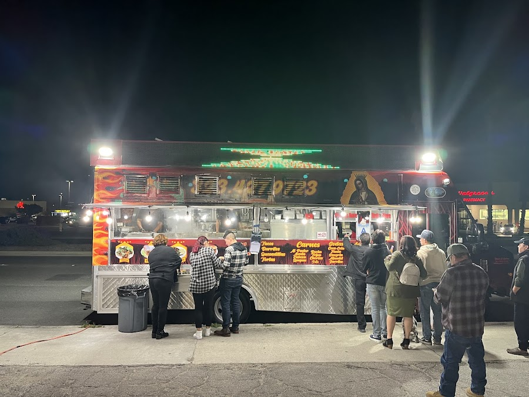
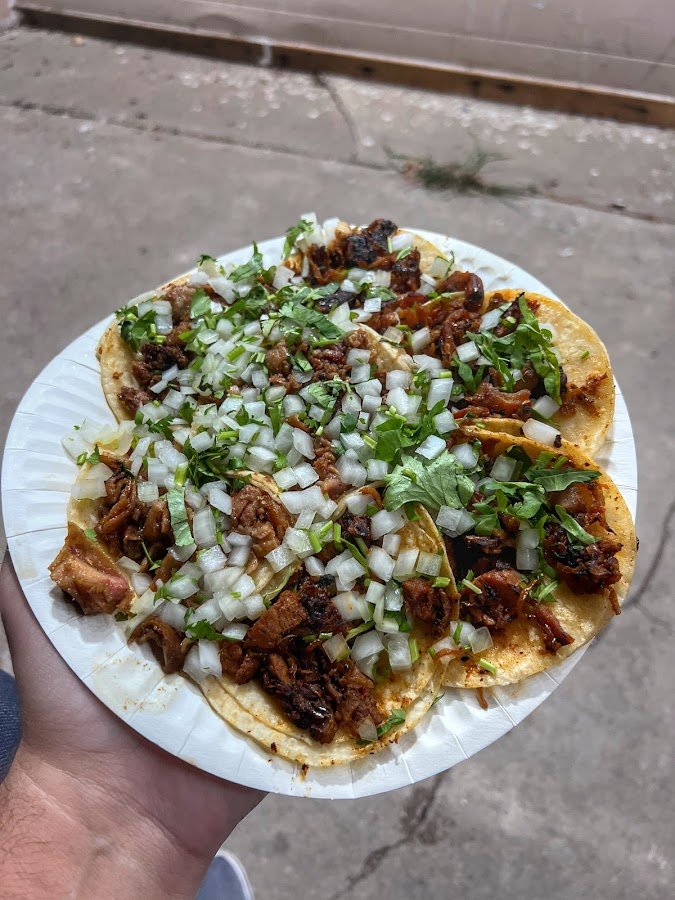
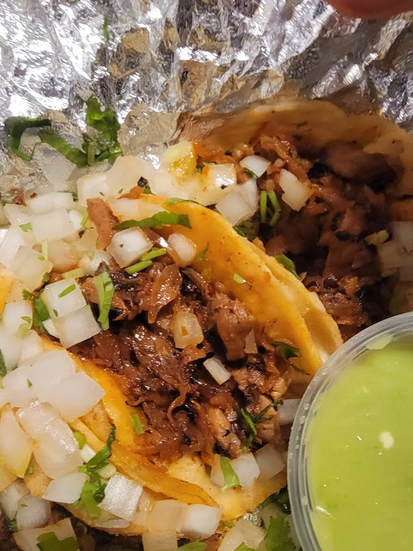
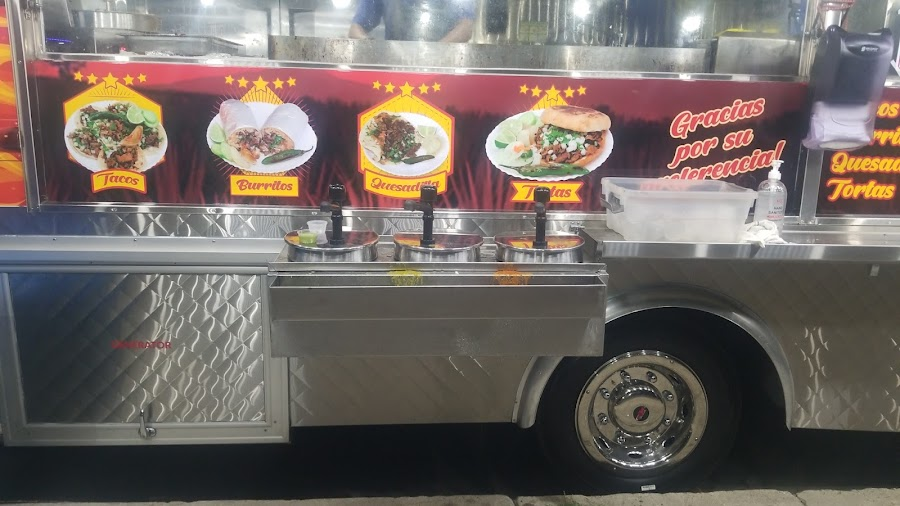
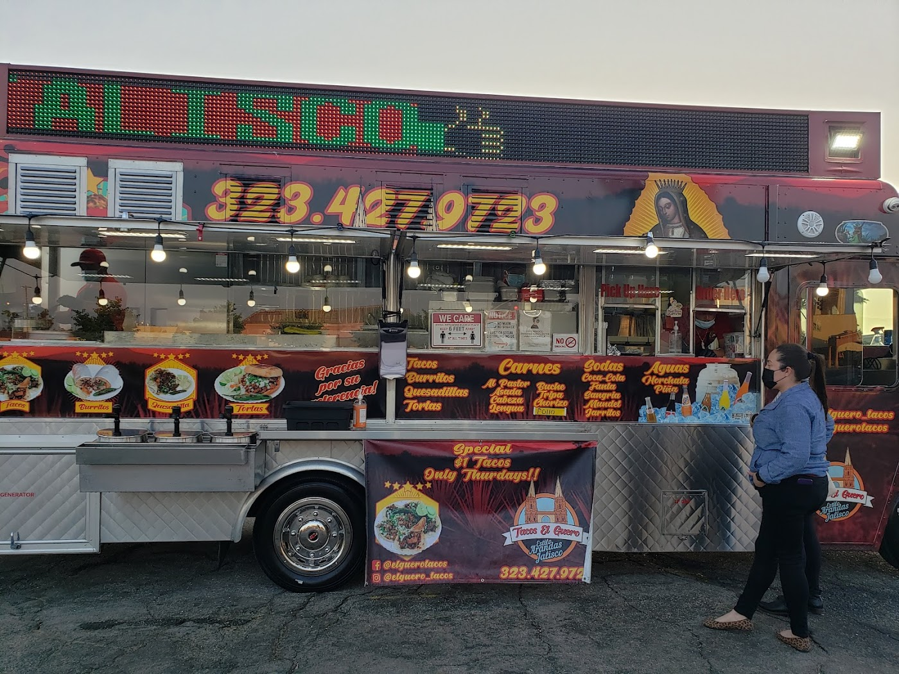
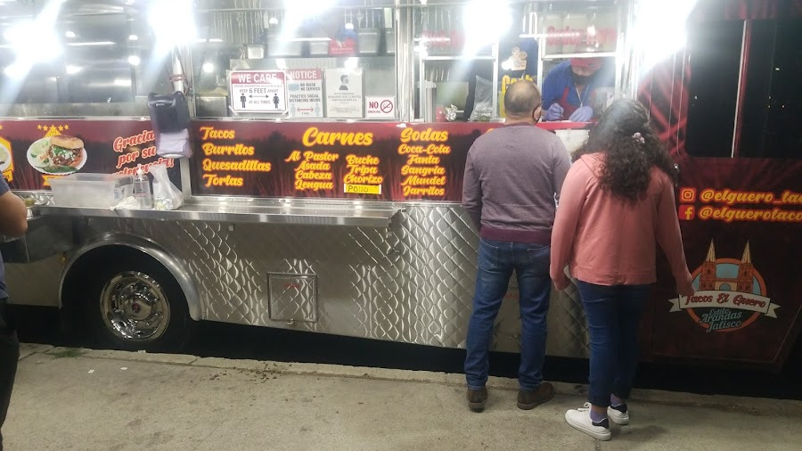

Tacos El Guerode las Arandas, Jalisco
Tortilla de maíz al comal, carne a la plancha, cebolla y cilantro fresco — la receta de un pueblo tapatío, servida desde nuestra troca cada noche.
¡Gracias por su preferencia!

De Las Arandas a Rialto
Tacos El Guero trae a las calles de Rialto el sabor de Jalisco — tacos de verdad, hechos como en el pueblo: trompo de pastor, asada a la plancha y los cortes que pocos se atreven a servir bien.
No somos un restaurante de manteles; somos la troca de la esquina donde se forma la fila y el servicio es rápido. Pides, esperas el comal, y te llevas un plato que sabe a casa.
Tacos, burritos, quesadillas y tortas — con aguas frescas y horchata bien fría para acompañar. Abrimos cada noche; ven con hambre.





Lo Que Dicen
“Great authentic tacos, excellent and fast service. All the tacos I tried were a 10 out of 10.
Cecilia M.
“The service is okay to me, and the tacos are good — y'all must be getting the wrong things if you're saying they taste bad.
Jeshua R.
Ven a la Troca
Horario
Abierto cada noche · 5 – 11 PM